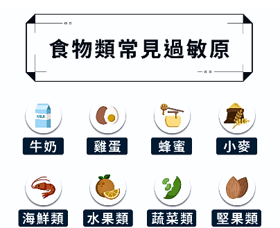

介紹
過敏是一種由免疫系統過度反應引起的現象，當人體接觸到某些通常無害的物質時， 免疫系統會將其誤認為威脅並啟動防禦機制。 這種過度反應會引發各種症狀，嚴重程度因人而異。
食物過敏
-
指人體的免疫系統對特定食物中的蛋白質產生過度反應。某些人食用或接觸這些食物時，免疫系統會錯誤地將其識別為有害物質，釋放出組織胺等化學物質來抵抗，從而引發過敏反應。
-
常見的食物過敏原：
1.堅果：如花生、核桃、杏仁等。 2.海鮮：如魚類和甲殼類（蝦、蟹）。 3.奶製品：如牛奶和奶酪。 4.雞蛋：尤其是蛋白部分。 5.植物：小麥、麩質及大豆。
- 症狀：常會在食用後幾分鐘至幾小時內出現，主要包括
1.皮膚：紅疹、蕁麻疹、搔癢。 2.消化系統：腹瀉、噁心、嘔吐。 3.呼吸系統：氣喘、喉嚨腫脹、呼吸困難。 4.其他：頭痛、頭暈、心悸。 5.嚴重反應：過敏性休克（anaphylaxis），這是一種可能危及生命的全身性反應，會導致呼吸困難、血壓驟降、意識模糊等。- 預防及管理：
1.避免接觸過敏食物 2.仔細查看標籤 3.醫療支持：定期與醫生交流，進行過敏測試，了解具體的過敏原，及早採取管理措施。 4.保健食品：益生菌、維生素C和魚油可能有助於減少過敏症狀。 5.藥物治療：對輕度過敏反應可使用抗組織胺藥物，如氯苯那敏（Chlorpheniramine）或西替利嗪（Cetirizine）。在嚴重過敏反應或過敏性休克的情況下，可使用肾上腺素自動注射器（EpiPen）進行緊急處理。環境過敏
-
指人體免疫系統對環境中的過敏原做出過度反應。這些過敏原通常來自空氣中的微小顆粒，當這些過敏源進入人體後，免疫系統將其錯誤識別為有害物質，並釋放組織胺等化學物質來對抗，從而引發過敏反應。
- 常見的環境過敏原：
1.動物皮屑：通常為貓或狗。 2.花粉：常發生在春秋季，尤其對樹木、草、雜草的花粉有過敏反應。 3.霉菌：霉菌的孢子進入空氣中，可能引發過敏反應。(生長在潮濕的地方，如浴室、地下室等) 4.塵蟎：尤其在溫暖、潮濕的環境中。通常寄居在床墊、枕頭、沙發等地方，並以人體皮屑為食。
- 症狀：
1.皮膚反應：紅疹、濕疹等。 2.眼部症狀：眼睛紅腫、癢、流淚。 3.鼻部症狀：鼻塞、流鼻水、打噴嚏等。 4.呼吸困難：有些人會出現喘息或呼吸困難的情況，特別是對塵蟎或霉菌過敏的人。
- 預防及管理：
1.保健食品：益生菌、維生素C和魚油可能有助於減少過敏症狀。 2.環境管理：保持室內乾燥，定期清潔空氣濾清器、床單和窗簾，避免霉菌滋生。 3.避免接觸過敏源：避免在花粉高峰期外出，使用空氣濾清器，並定期清潔家中，減少塵蟎的數量。 4.藥物治療：常見的藥物包括抗組織胺藥物、類固醇鼻噴霧劑等，這些藥物有助於緩解鼻塞、眼癢等過敏症狀。
季節性過敏
-
是一種與特定季節相關的過敏反應，通常由環境中的過敏原（如花粉、霉菌孢子等）引發，特別是在春季和秋季常見。
- 常見的季節性過敏原：
1.春季：樹木或花朵的花粉。 2.夏季：草類花粉。 3.秋季：野草花粉。 4.冬季：冷空氣或室內黴菌。
- 症狀：
1.鼻部：打噴嚏、流鼻水、鼻塞。 2.眼部：發癢、紅腫或流淚。 3.呼吸道症狀：咳嗽、喉嚨癢或乾燥感。 4.其他症狀：部分患者會出現喘息、胸悶，尤其是已有哮喘病史的人。
- 預防及管理：
1.提前使用抗過敏藥物（如抗組織胺或類固醇鼻噴劑）。 2.戴口罩和眼鏡：在戶外活動時保護鼻腔和眼部不接觸過敏原。 3.免疫療法：透過長期脫敏療法減少對過敏原的反應。
- 如何區分季節性過敏與感冒？：
1.持續時間：感冒通常持續 7-10 天，季節性過敏可能持續數周甚至數月。 2.分泌物性質：過敏通常為透明的鼻涕，感冒則可能變為黃綠色。 3.是否發燒：過敏不會引起發燒，而感冒或感染通常伴隨低燒或高燒。 4.身體酸痛：感冒患者可能有全身酸痛，但過敏通常不會出現此症狀。
藥物過敏
-
免疫系統將某些藥物成分錯誤地識別為有害物質，從而引發過敏。這些反應可能僅影響皮膚或擴展到全身，嚴重時甚至可能危及生命。
-
常見的藥物過敏原：
1.抗生素：青黴素、頭孢類藥物(如頭孢氨苄，與青黴素結構類似，部分對青黴素過敏的人也可能對此類藥物過敏)。 2.止痛藥：非類固醇消炎藥（NSAIDs）➛如阿司匹林、布洛芬（普拿疼）或萘普生。 3.麻醉藥物：全身或局部麻醉劑，可能導致手術中或手術後的嚴重過敏反應（例如低血壓、氣管痙攣）。 4.對比劑：用於醫學影像檢查（如 X 光或 CT）時，某些碘造影劑可能引發過敏反應。 5.其他藥物：化療藥物(紫杉醇)、抗癲癇藥物(卡馬西平)。
- 症狀：
1.呼吸道症狀：鼻塞、流鼻水、喉嚨癢(輕)，類哮喘症狀之喘息(中)。 2.皮膚反應(輕)：紅疹、癢疹或蕁麻疹（皮膚上浮起的紅色或白色圓形斑塊），眼瞼或嘴唇輕微的腫脹 3.胃腸道反應(中)：噁心、嘔吐、腹瀉或腹痛。 4.嚴重症狀（危及生命的過敏性反應）➛過敏性休克（Anaphylaxis）: ▸快速心跳：血壓突然下降導致心悸或虛弱。 ▸呼吸困難：喉頭水腫（喉腔收窄）或氣管痙攣。 ▸皮膚蒼白、出冷汗：可能伴隨頭暈或意識模糊。 ▸腸胃道症狀：劇烈的腹痛、噁心或腹瀉。 4.嚴重症狀➛嚴重皮膚反應： ▸史蒂文斯-約翰遜綜合症（SJS）：皮膚剝落、發紅，可能伴隨黏膜潰瘍。 ▸中毒性表皮壞死鬆解症（TEN）：大面積皮膚壞死，危及生命。- 藥物過敏的處理方法：
1.停用可疑藥物。 2.藥物治療（針對輕中度反應） ▸抗組織胺藥：如氯雷他定、苯海拉明，緩解皮膚癢疹或鼻部症狀。 ▸類固醇藥物：如口服或注射型類固醇，用於減輕中度到嚴重的炎症反應。 3.緊急處理（對於嚴重反應） ▸過敏性休克：立即注射腎上腺素（如 EpiPen），並送往急診，接受氧氣供應、靜脈輸液以及密切監控。 ▸呼吸困難：使用氣管擴張劑（如吸入型 β2-激動劑）緩解氣喘症狀。 4.醫學檢測與後續管理 ▸藥物過敏測試：醫生可能會安排皮膚測試或血液測試，以確認過敏原。 ▸替代藥物：根據測試結果，醫生會選擇不會引發過敏反應的替代藥物。 ▸過敏史記錄：患者應將已知過敏藥物記錄下來，並在就醫時告知醫護人員。- 預防藥物過敏：
1.完整病史記錄：將過去發生過的過敏反應及藥物名稱詳細記錄，並隨身攜帶。 2.標籤提醒：在醫療檔案或藥物標籤上註明「對某些藥物過敏」。 3.脫敏治療（Desensitization）：在特定情況下（如藥物不可替代），醫生可能會逐步給予極小劑量的藥物，使身體慢慢適應，減少過敏反應的風險。 4.隨身攜帶急救用品：對於有嚴重過敏史的人，隨身攜帶腎上腺素自動注射器（如 EpiPen）。其他過敏
-
除了常見的季節性、食物或藥物過敏外，對一些特殊物質（如化學品、昆蟲叮咬或金屬）產生免疫反應的情況。
- 類型：
1.化學品過敏：清潔劑、香水、染髮劑。 2.昆蟲叮咬過敏：蜜蜂、黃蜂、螞蟻毒液。 3.金屬過敏：鎳、鈷、鉻等金屬。
- 症狀：
1.昆蟲叮咬：局部可出現明顯腫脹或硬塊，持續疼痛或瘙癢。 2.金屬、化學品：皮膚乾燥、脫皮，甚至破損。 3.輕微反應：頭暈、噁心、心跳加速，部分人可能感到疲倦或乏力。。 4.嚴重情況：呼吸困難、胸悶，甚至咽喉腫脹、聲音沙啞。 5.極端情況：發生過敏性休克，表現為血壓驟降、皮膚蒼白、意識模糊，需立即急救處理。
- 預防及管理：
1.避免過敏源：避免接觸已知過敏物質，選擇無香料或無化學成分的產品。 2.藥物治療：使用抗組胺藥物或外用藥物來緩解症狀。 3.穿戴防護：避免金屬飾品，穿長袖衣物防止昆蟲叮咬。 4.緊急處理：嚴重過敏反應時，立刻使用腎上腺素並就醫。
- 症狀：
- 症狀：常會在食用後幾分鐘至幾小時內出現，主要包括